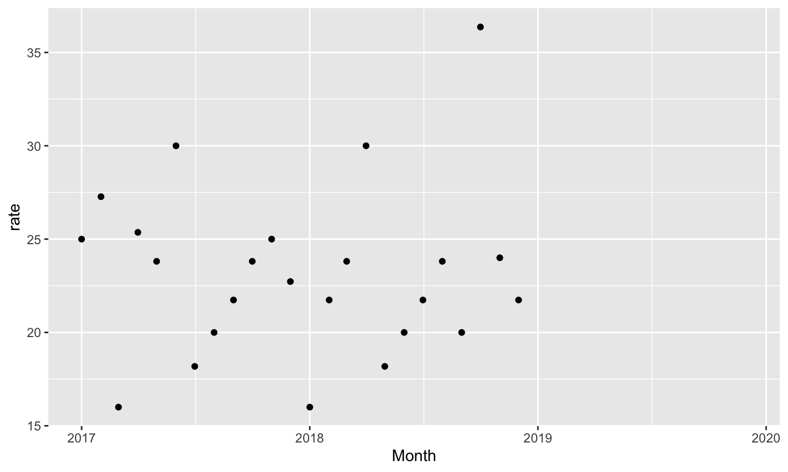
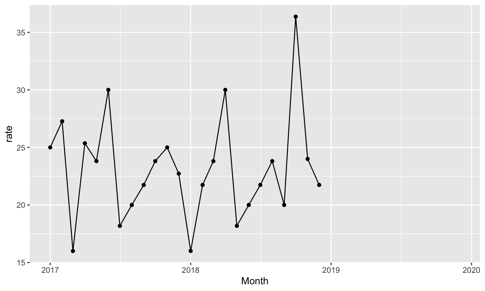
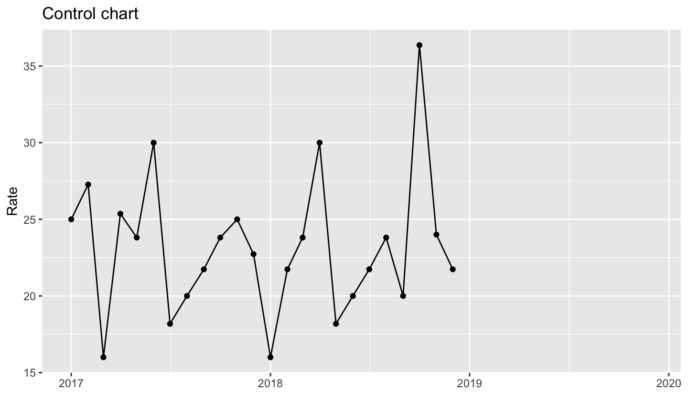
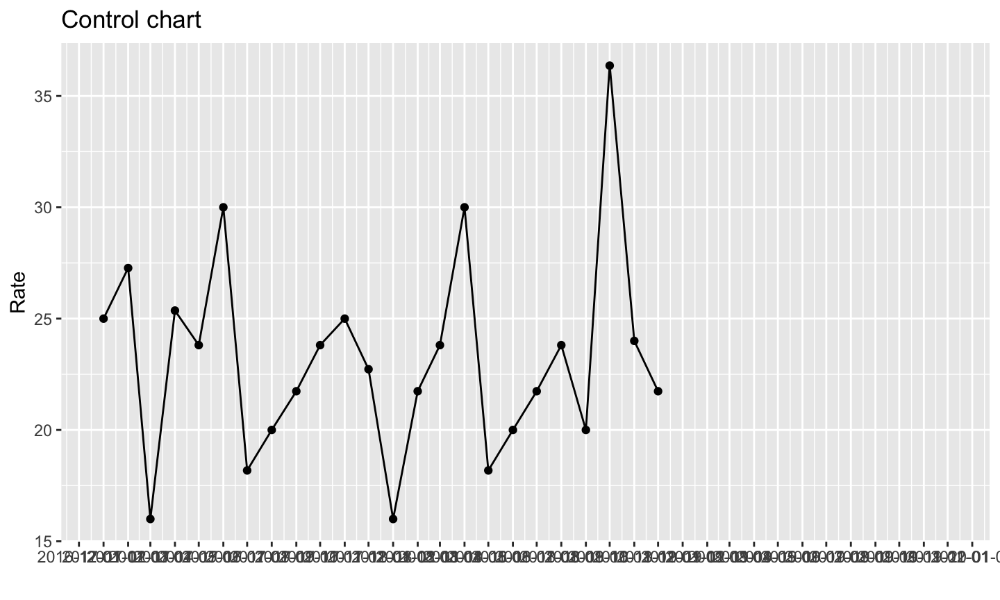
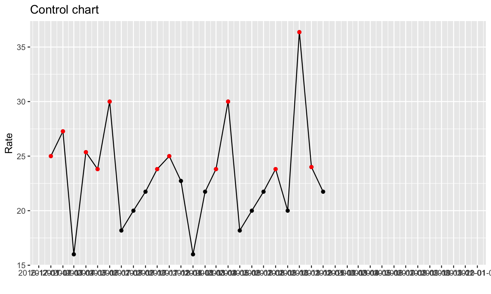
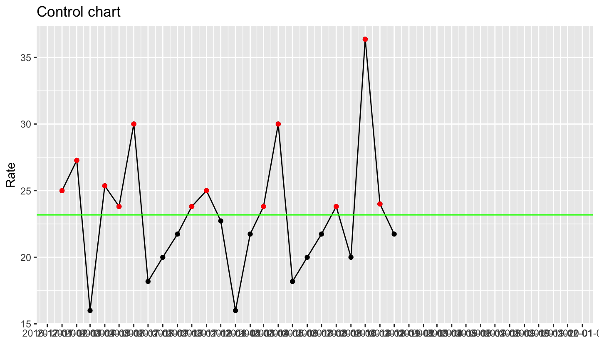
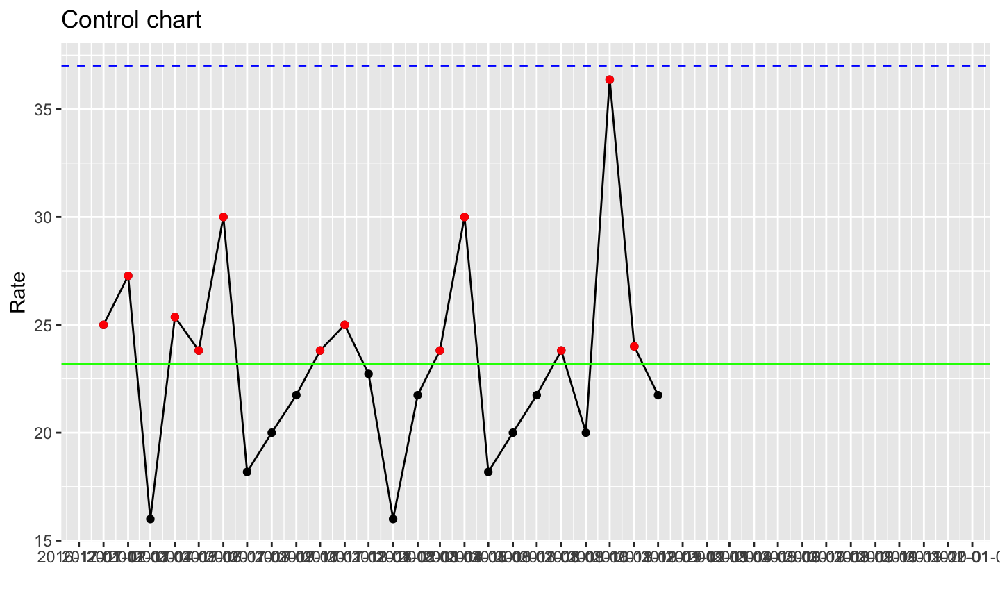
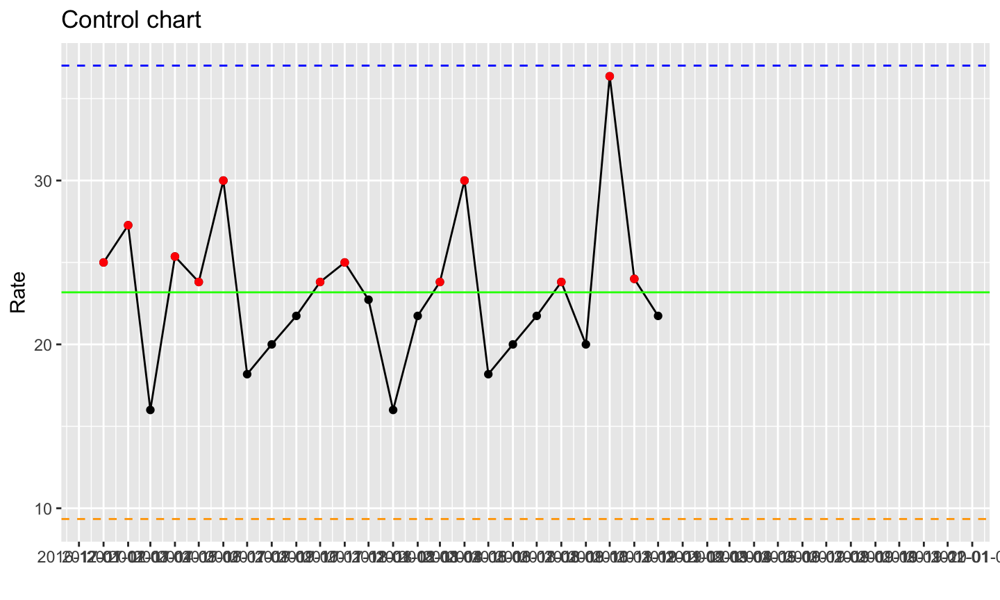
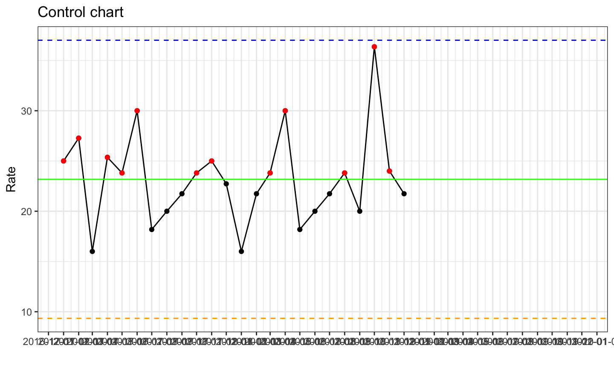
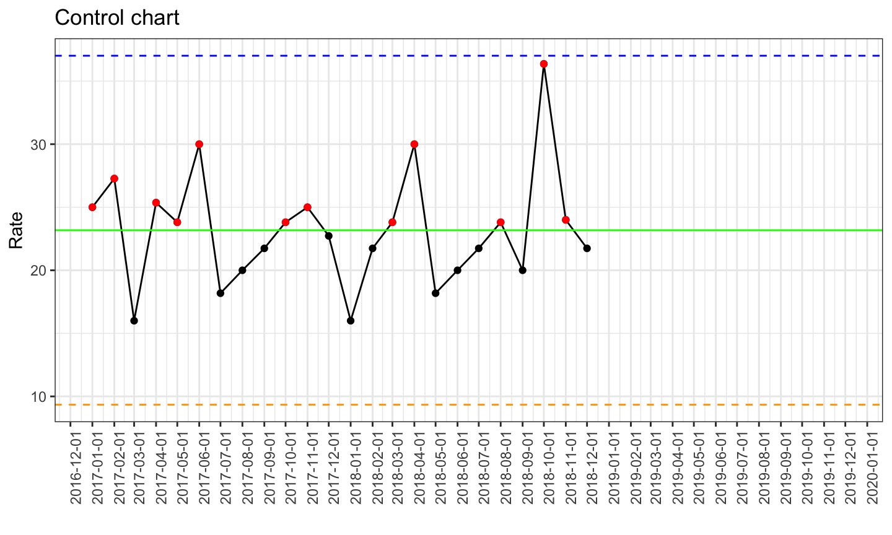

Volume
- Data collection & storage allows access to huge amounts of medical information
Ubiquity
- Data are available anywhere across geography, social, and economic classes
Latency
- Technology facilitates no delay in access to data
2021-02-11
Volume
- Data collection & storage allows access to huge amounts of medical information
Ubiquity
- Data are available anywhere across geography, social, and economic classes
Latency
- Technology facilitates no delay in access to data
Data-driven decision making!
 http://drewconway.com/zia/2013/3/26/the-data-science-venn-diagram
http://drewconway.com/zia/2013/3/26/the-data-science-venn-diagram
 Joel Grus via KDnuggets
Joel Grus via KDnuggets


<- (looks like an arrow pointing left)Assign an object; remember, no quotes on namename <- 4
Return that object by typing its namename
Try this in the code chunk below, then hit “Run Code”
round(x, digits = 3)Try this in the code chunk below, then hit “Run Code”
round(pi, digits = 3)
Suppose one <- 1
Try it for yourself!
one <- 1
Data stored in a dataframe are conceptually equivalent to a spreadsheet with rows and columns
Tidyverse is one suite of tools for data science

IMPORT (readr):
- read_csv()
- read_delim()
TIDY & TRANSFORM (dplyr):
- mutate() adds new variables that are functions of existing variables
- select() picks variables based on their names.
- filter() picks cases based on their values.
- summarise() reduces multiple values down to a single summary.
- arrange() changes the ordering of the rows.
VISUALISE (ggplot): creating graphics, based on ‘The Grammar of Graphics’
- aes()
- geom_x() + layers
MODEL (broom):
- tidy(), glance(), augment()

magrittr package
magrittr packagemagrittr package by Stefan Milton Bache developed the concept of the pipe, which is used heavily in the tidyverse

The “pipe” is a sequence of functions, that are sequentially applied to an object
wakeup(self) %>%
put_on("clothes") %>%
eat("breakfast") %>%
go(to = "work")
Alternative nested code:
go(eat(put_on(wakeup(self), "clothes"), "breakfast"), to = "work")
What does this code do?
wakeup(self) %>%
put_on("clothes") %>%
eat("breakfast") %>%
fmk() %>%
go(to = "work")
What does this code do?
morning_routine <- wakeup(self) %>%
put_on("clothes") %>%
eat("breakfast") %>%
fmk() %>%
go(to = "work")
cauti_data, cauti_updated, and cauti_detailsUse the dim() function to see how many rows (observations) and columns (variables) are in cauti_data
dim(cauti_data)
Use the glimpse() function to see what kinds of variables the cauti_data dataset contains
glimpse(cauti_data)
R has different data types -
character - "a", "tidyverse"
numeric - 2, 11.5
integer - 2L (the L tells R to store this as an integer)
logical - TRUE, FALSE
complex - 1+4i
(raw)
You will also come across the double datatype. It is the same as numeric
factor. A factor is a collection of ordered character variables
In addition to the glimpse() function, you can use the class() function to determine the data type of a specific column
class(cauti_data$Month)
## [1] "Date"
dplyrdplyr is a package that contains a suite of functions that allow you to easily manipulate a dataset
Some of the things you can do are -
select rows and columns that match specific criteria
create new variables (columns)
obtain summary statistics on individual groups within your datasets
The main verbs we will cover are select(), filter(), arrange(), mutate(), and summarise(). These all combine naturally with group_by() which allows you to perform any operation “by group”
cauti_details datasetHow do you look into cauti_details?
select() specific columns from your datasetThe most basic select() is one where you comma separate a list of columns you want included
For example, if you only want to select the Age and Gender columns, run the following code chunk
cauti_details %>%select(Age, Gender)
select()If you want to select all columns except Age, run the following
cauti_details %>%select(-Age)
select()Finally, you can provide a range of columns to return two columns and everything in between. For example
cauti_details %>%select(Age:Diagnosis)
filter() rows based on certain condition(s)The filter() verb evalutes a logical statement, and if a row meets the condition of this statement (i.e. is true) then it gets chosen (or “filtered”).
All other rows are discarded
filter()Filtering can be performed on categorical data
cauti_details %>%filter(Diagnosis == "ICH")
filter()Filtering can also be performed on numeric data
For example, if you wanted to choose Age with a value greater than 35, you would run the following.
cauti_details %>%filter(Age > 35)
filter()To filter on multiple conditions, you can write a sequence of filter() commands
cauti_details %>%filter(Diagnosis == "ICH") %>% filter(Age > 35)
filter()To avoid writing multiple filter() commands, multiple logical statements can be put inside a single filter() command, separated by commas
cauti_details %>%filter(Diagnosis == "ICH", Age > 35)
arrange() sorts rowsThe input for arrange is one or many columns, and arrange() sorts the rows in ascending order i.e. from smallest to largest
For example, to sort rows from smallest to largest Age, run the following
cauti_details %>%arrange(Age)
arrange()To reverse this order, use the desc() function within arrange()
cauti_details %>%arrange(desc(Age))
mutate()The mutate() verb, unlike the ones covered so far, creates new variable(s) i.e. new column(s). For example
cauti_data %>%mutate(rate =Number of CAUTIs/Foley Days* 100)
The code chunk above divides Number of CAUTIs by Foley Days for each row, and populates a new column called rate with these results
mutate() to make a new columncauti_data %>%mutate(rate =Number of CAUTIs/Foley Days* 100)
summarise() and summarize()summarize() is one of the key functions in dplyr. It produces a new dataframe that aggregates that values of a column based on a certain condition.
For example, to calculate the mean Age, run the following
cauti_details %>%summarize(mean(Age))
group_by()group_by() and summarize() are a powerful combination of functions to summarize by groups
cauti_details %>%group_by(Gender) %>% summarize(mean(Age))
cauti_detailscauti_details %>% group_by(Gender) %>% count(Diagnosis) %>% arrange(desc(n))
cauti_detailscauti_details %>% group_by(Gender) %>% summarise(mean_foley = mean(Foley Days), mean_age = mean(Age))
cauti_updated datasetHow do we take a look into cauti_updated?
Below is an example of the most basic form of the ggplot code
ggplot(data = dataframe, mapping = aes(x, y)) +geom()
Take a moment to look back at the code template. You can see that in that code we assigned a dataset and the information we needed to map it to a type of plot
ggplot(data = cauti_updated, mapping = aes(x = Month, y = rate)) +geom_point()

ggplot(cauti_updated, aes(x = Month, y = rate)) +geom_point()

ggplot(cauti_updated, aes(x = Month, y = rate)) +geom_point() +geom_line()

ggplot(cauti_updated, aes(x = Month, y = rate)) +geom_point() +geom_line() +labs(x = "", y = "Rate", title = "Control chart")

ggplot(cauti_updated, aes(x = Month, y = rate)) +geom_point() +geom_line() +labs(x = "", y = "Rate", title = "Control chart") +scale_x_date(date_breaks = "1 month")

ggplot(cauti_updated, aes(x = Month, y = rate)) +geom_point() +geom_line() +labs(x = "", y = "Rate", title = "Control chart") + scale_x_date(date_breaks = "1 month") +geom_point(data = filter(cauti_updated, rate > mean), col = "red")

ggplot(cauti_updated, aes(x = Month, y = rate)) +geom_point() +geom_line() +labs(x = "", y = "Rate", title = "Control chart") +scale_x_date(date_breaks = "1 month") +geom_point(data = filter(cauti_updated, rate > mean), col = "red") +geom_hline(aes(yintercept = mean), colour = "green")

ggplot(cauti_updated, aes(x = Month, y = rate)) +geom_point() +geom_line() +labs(x = "", y = "Rate", title = "Control chart") + scale_x_date(date_breaks = "1 month") +geom_point(data = filter(cauti_updated, rate > mean), col = "red") +geom_hline(aes(yintercept = mean), colour = "green") +geom_hline(aes(yintercept = ucl), col = "blue", linetype = "dashed")

ggplot(cauti_updated, aes(x = Month, y = rate)) +geom_point() +geom_line() +labs(x = "", y = "Rate", title = "Control chart") +scale_x_date(date_breaks = "1 month") +geom_point(data = filter(cauti_updated, rate > mean), col = "red") +geom_hline(aes(yintercept = mean), colour = "green") +geom_hline(aes(yintercept = ucl), col = "blue", linetype = "dashed") +geom_hline(aes(yintercept = lcl), col = "orange", linetype = "dashed")

ggplot(cauti_updated, aes(x = Month, y = rate)) +geom_point() +geom_line() +labs(x = "", y = "Rate", title = "Control chart") + scale_x_date(date_breaks = "1 month") +geom_point(data = filter(cauti_updated, rate > mean), col = "red") +geom_hline(aes(yintercept = mean), colour = "green") +geom_hline(aes(yintercept = ucl), col = "blue", linetype = "dashed") +geom_hline(aes(yintercept = lcl), col = "orange", linetype = "dashed") +theme_bw()

ggplot(cauti_updated, aes(x = Month, y = rate)) +geom_point() +geom_line() +labs(x = "", y = "Rate", title = "Control chart") + scale_x_date(date_breaks = "1 month") +geom_point(data = filter(cauti_updated, rate > mean), col = "red") +geom_hline(aes(yintercept = mean), colour = "green") +geom_hline(aes(yintercept = ucl), col = "blue", linetype = "dashed") +geom_hline(aes(yintercept = lcl), col = "orange", linetype = "dashed") +theme_bw() +theme(axis.text.x = element_text(angle = 90))

Data science enables data-driven information gathering and hypothesis generation
– Scientific Research
– Reviews
Data science enables the ability to ask new types of questions
Process-centric, not necessarily question-centric
Making things computable makes them actionable at zero marginal cost.
Workflows save time, achieve reproducibility
Inspiration, ideas, packages, code
- R4DS (Garrett Grolemund and Hadley Wickham)
- Mine Çetinkaya-Rundel (datasciencebox.org)
- Chester Ismay and Albert Y. Kim (Modern Dive)
- Garrett Grolemund (Remastering the Tidyverse)
- Tidyverse devs and community
- Rstudio